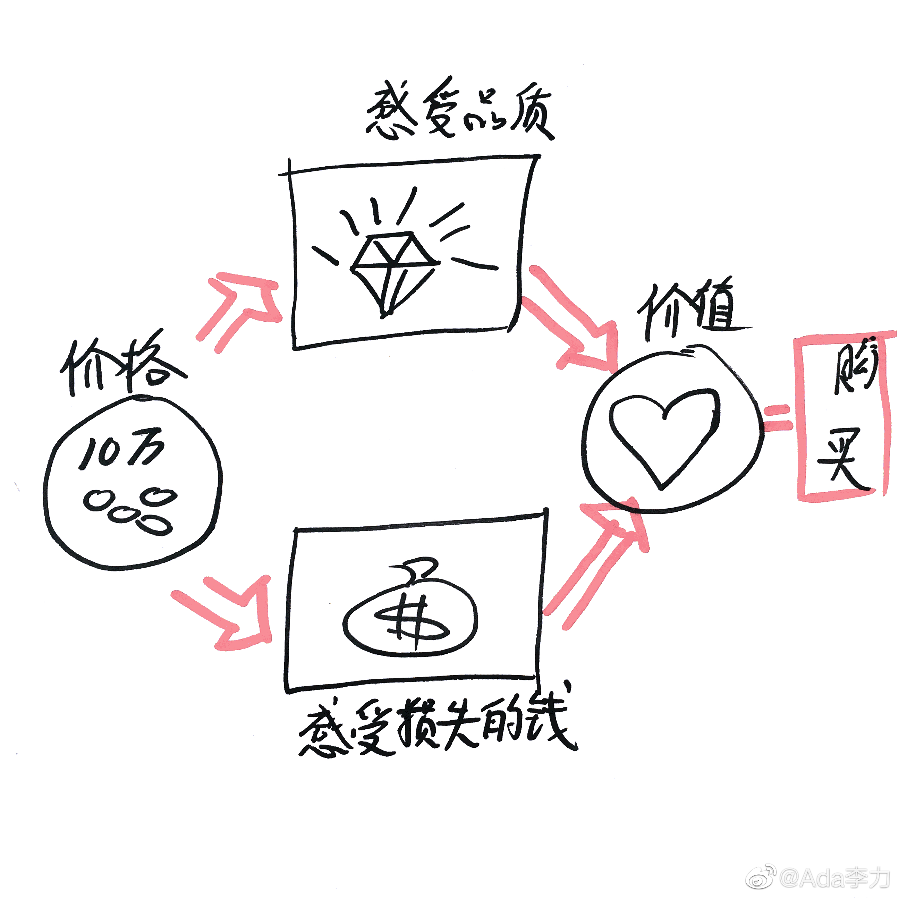

#创业# 一个消费者也许说不出来，他刚刚放进购物车的一盒快餐的准确价格，但是他能够说出他认为这个东西是贵还是便宜的判断。
我从这个例子中看到的是人的记忆是有限的，比如对具体数字的记忆，而人却能记住自己的感觉，而且这种感觉能保持很长时间。
所以消费者最后记住的都是对于商品价值的判断，对于这次购买，他是觉得赚到了还是亏了。
我从这个例子中看到的是人的记忆是有限的，比如对具体数字的记忆，而人却能记住自己的感觉，而且这种感觉能保持很长时间。
所以消费者最后记住的都是对于商品价值的判断，对于这次购买，他是觉得赚到了还是亏了。
- 